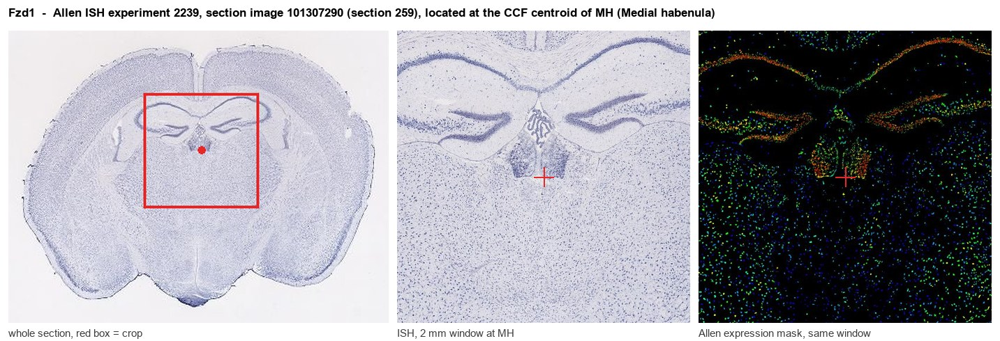
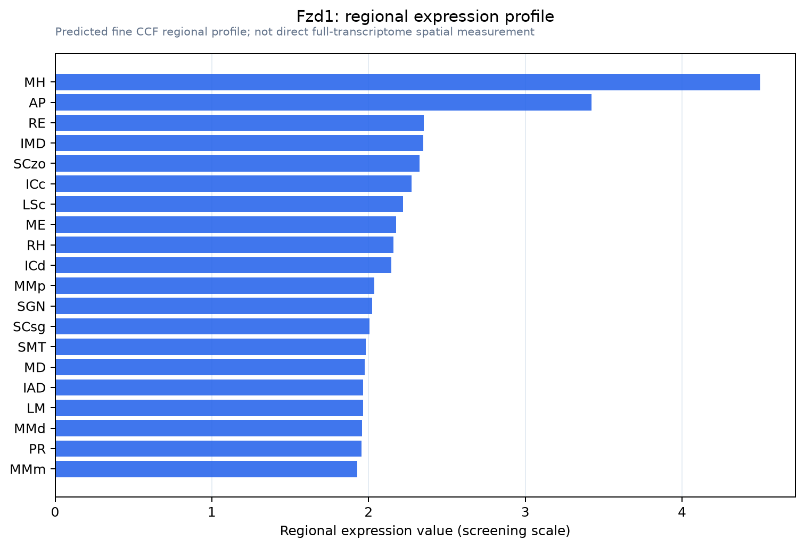

Fzd1
Frizzled-1 (Fz-1) (mFz1)
Spatial tier: RESTRICTED · Class: GPCR · Top region: MH (Medial habenula) · Positive regions: 24/554
43.2Discovery Score
41.1Targetability Score
CEvidence grade C
What this means: Fzd1: fine CCF profile is restricted toward MH (top regions: MH, AP, RE, IMD, SCzo; 24 positive regions); direct spatial validation is still required.
Function in MH: evidence, prediction, innovation
- Gene function
- FZD1 (Frizzled-1) is a seven-transmembrane Wnt receptor of the Frizzled family. Together with LRP5/6 co-receptors it transduces canonical Wnt/beta-catenin signalling, stabilising beta-catenin for nuclear transcription, and it can also engage non-canonical planar-cell-polarity and Wnt/calcium pathways. In neurons, Frizzled-1 has an additional role in presynaptic assembly.
- Region function
- The medial habenula is a dorsal diencephalic nucleus whose cholinergic, glutamatergic and substance-P neurons project almost exclusively through the fasciculus retroflexus to the interpeduncular nucleus; it controls nicotine aversion and withdrawal, anxiety and mood.
- Published in this region
- inferred No region-specific literature found. The closest evidence is that Wnt signalling as a pathway is required for habenular neuron diversification and left-right asymmetry (Guglielmi et al. 2020, in zebrafish; Roberson & Halpern 2018), and that Frizzled-1 specifically regulates presynaptic differentiation and function (Varela-Nallar et al. 2009) and adult hippocampal neurogenesis (Mardones et al. 2016) in mammals.
- Predicted function
- Prediction: given Frizzled-1's presynaptic role and the medial habenula's unusually specialised terminals in the interpeduncular nucleus, FZD1 here is predicted to act mainly as a presynaptic organiser that maintains the cholinergic and glutamatergic release machinery of the fasciculus retroflexus rather than as a transcriptional Wnt receptor. Conditional Fzd1 deletion in MH neurons is predicted to reduce active-zone protein clustering and vesicle number at MH-to-IPN terminals, weaken the characteristic frequency-dependent facilitation of this synapse, and consequently reduce nicotine aversion and withdrawal severity; local Wnt3a or the Frizzled agonist should have the opposite effect on terminal size.
- Innovation
- ★★★★★ 5/5 Wnt receptors have never been examined in the mammalian medial habenula despite a highly tractable, molecularly distinctive synapse and the availability of Fzd1 mutants.
- Tools
- Fzd1 knockout mice (viable, used in neurogenesis studies) and Fzd1 floxed alleles; Wnt3a and Wnt7a ligands, the Wnt antagonists sFRP and Dkk1, and porcupine inhibitors LGK974/IWP-2; anti-FZD1 antibodies; Tac1-Cre, Chat-Cre and Chrna3-Cre for medial habenula subpopulations.
- References
Direct evidence located at the region

Allen ISH experiment 2239, section image 101307290 (section 259): the section that contains the CCF centroid of Medial habenula according to the Allen image-to-atlas alignment (reference_to_image), with a 2 mm window around that point. Left: whole section, red box = window. Middle: ISH signal. Right: Allen's expression-mask view of the same window. open this image in the Allen viewer
Look it up yourself: Allen Mouse Brain ISH for Fzd1Allen reference atlas: MH (structure 483)ABC Atlas MERFISH viewer(in the ABC Atlas choose dataset MERFISH-C57BL6J-638850-CCF, colour cells by gene "Fzd1" or by parcellation_substructure "MH")All genes confined to MH + 3-D brain
Direct spatial evidence
MERFISH REGION LOCATOR

Regional expression figure

Predicted WMB × fine-CCF profile; not direct full-transcriptome spatial measurement.
Spatial profile
Evidence and specificity
- Evidence status
- PREDICTED_FINE
- Direct sources
- None; predicted localization only
- Exclusive threshold
- 12 positive regions out of 554
- Spatial specificity
- 0.298
- Top-region fraction
- 0.068
- Filter status
- PASS
Interpretation limits
- Cell-type-to-region projection is imputed expression, not direct spatial measurement.
- Adult reference atlases do not establish stability across age, sex, strain, state, or disease.
- Transcript abundance does not guarantee protein abundance or genetic-tool performance.